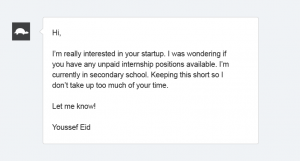
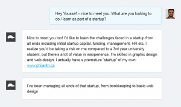
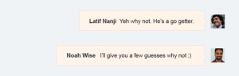
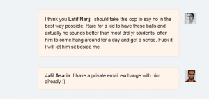
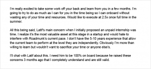
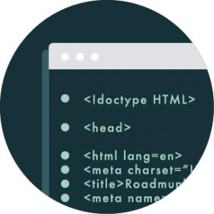
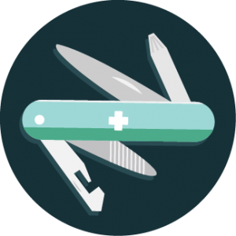

You don’t need a degree—or any experience whatsoever—to get a product management internship. At least, that’s what our own intern, Youssef, wanted to prove. Youssef is 18. He just finished high school. He first connected with Roadmunk via cold message. And he basically started looking for internships to prove a point.
“A bunch of my teachers in school said it’s impossible to get any type of good decent job, or any experience at all, without some form of degree or experience,” Youssef says, “I was like, ‘I think i can.’”
Youssef was right. You don’t need a degree or experience to get a worthwhile gig. But you also can’t just send a standard cover letter. Although we never thought we’d hire a random teenager, Youssef proved, both during and after the recruitment process, that he could bring concrete benefits to our team. How did he do it? In Youssef’s case, it was all about being relentlessly resourceful.
We thought Youssef’s story would be helpful for other aspiring PMs looking to get a foothold in the field. Youssef’s experiences (it’s a pretty cool/funny story), then outline some tips for landing your first product management internship.
How Youssef met Roadmunk
So. Youssef wanted to land an internship in product. He knew he wanted to get startup experience, so he researched companies at the DMZ, the incubator where Roadmunk was operating at that time. He narrowed his search down to two places, Roadmunk and ChefHero. Then he sent us the following chat message via the support channel on our website.

A few things to note about this message:
- It’s super short.
- It’s lucid. The sentences are crystal-clear.
- It’s friendly but confident.
This message caught our attention. But it obviously wasn’t enough to convince our team to hire a high-school kid. Over the next few minutes, there was some more back-and-forth.

And some skepticism…

Eventually Jalil, our Head of Sales, suggested turning Youssef down but letting him come to the office and hang out for a day.

Now Youssef had an “in.” Latif proposed the one-day hang—which you can read about here. During his day at Roadmunk, Youssef talked more about his own startup, a Canadian-made menswear business called Phil Anth, and generally demonstrated that he was not only smart and willing to learn, but exceptionally resourceful.
(Side note: Youssef says he started Phil Anth by “calling a bunch of factory owners.” This is mayyybe not a typical 18-year-old.)
After that day, Latif thought he was done. But Youssef wasn’t. He kept up an email correspondence with different team members, working every available angle and continuing to show enthusiasm. He also used his connection with Roadmunk to get introductions to other key players in the local startup ecosystem, and continued using Latif as a sounding board while weighing his post-high school plans. Here’s just one of the follow-up messages he sent Latif.
Basically, Youssef was playing the long game. A few months after his job-shadow day, he sent another email, proposing a second visit.
That additional day turned into a week-long stint in our Toronto office. At this point, Youssef knew he wanted a product management internship, so he starting building a relationship with Sameena, our Head of Product. Five months after his initial chat message, Youssef again pitched a full-on summer gig.

A few notes about this final pitch:
- It shoots straight. Youssef shows maturity and humility by acknowledging the challenges to hiring a newb.
- He talks about how excited he is to learn. Twice.
- He demonstrates that he “gets” the startup vibe. Whether you’re pitching a startup or an enterprise, it’s important to understand their unique pressures.
Youssef took a bottom-up sales approach to landing a product management internship. He was patient, and built relationships over time rather than giving up after the first letdown.
Latif explains it like this: “He first went to our support channel, and he got to spend a day in the office. Then it was like, ‘Okay, how do I work here for a week?’ He thought, ‘I’m going to bug Sameena because I want to work in product.’ And then he got to work here for a week. Then he’s like, ‘Okay, how do I actually land a full-on internship?’”
That’s Youssef’s story, and it’s pretty unique—chances are you couldn’t replicate this exactly. However, there are some key takeaways from Youssef’s experience that apply to anyone seeking a foothold in product management.
Landing a product management internship
Regardless of your education or experience, Latif says there are basically two core skills you need to get an internship in product management.
- A+ communication skills
- Some technical competency
Here are a few relevant insights from Youssef’s story that demonstrate how he proved his value in these two areas.
Make clarity your priority. Notice how all of Youssef’s emails get straight to the point? Communication is one of the most essential competencies for product managers. When trying to land an internship, clarity has two benefits. It makes it a lot more likely that the person on the receiving end will actually read—and respond to—your email. And it shows that you have the core communication skills needed to even start doing the job at a basic level.
Target relationships, not just internships. “Youssef basically worked the system,” Latif explains, “He worked Sameena, he worked Jalil, and then those people said, ‘I need Youssef because he is going to add value.’” Youssef ultimately didn’t get his internship because of his emails or his entrepreneurial instincts—he was hired because he built strong relationships with everyone on the team.
Balance confidence with willingness to learn. In Youssef’s final email to Sameena, he repeatedly stresses how excited he is to learn. But he always sounds assured, even when acknowledging the risks associated with hiring someone inexperienced. As Youssef puts it: “If you show some confidence, and the fact that you’re also willing to learn, it just balances out.”

Show some technical literacy. We know, we know: being a product manager doesn’t mean knowing how to code. But you do have to have a certain degree of technical proficiency. What does this mean? Youssef proved his technical mettle during his one-week residency at Roadmunk when he was assigned a topsy-turvy task in Excel. Latif says he quickly figured out what to do. “A lot of people will see a spreadsheet, and just think, ‘Math, high school, I’m done here.’ That wasn’t the case,” Latif explains, “I saw the output of the work and I knew that he was technical enough.”

Be relentlessly resourceful. Hands down, this was the key to Youssef’s ultimate success in landing a product management internship. After the initial letdown, Youssef didn’t just shrug and walk away. He kept in touch. He kept working different angles. He kept trying. And trying. And trying. Until he finally reached his desired outcome. Whether you’re trying to break into product management or you’re already on-the-job, relentless resourcefulness is crucial for building both your career—and a product.